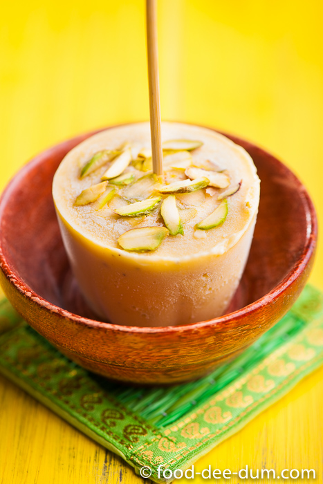

Trophḗ Haven
Asian
Menu
Home
Region +
Asian
European
American
Meals +
Breakfasts & Brunches
Lunches
Appetizers & Snacks
Side Dishes
Breads
Drinks
Desserts
Contact
Desserts

Kulfi (/kʊlfiː/) is a frozen dairy dessert from the Indian subcontinent. It is often described as "traditional Indian ice cream". Kulfi originated in 16th-century Delhi during the Mughal era.
Meal prep time :
9 hours
Servings :
6
Fig, Walnut and Saffron Kulfi
Ingredients:
1 tsp saffron threads
1 tbsp boiling water
395g can sweetened condensed milk
400ml can coconut milk
300ml thickened cream
2 cinnamon sticks
2 green cardamom pods, bruised
4 whole cloves
4 dessert figs, coarsely chopped
1/4 cup (30g) walnut halves, chopped
3/4 cup (125g) finely chopped palm sugar
300ml thin cream
2 whole star anise
Directions:
Combine saffron and water in a saucepan.
Set aside for 10 minutes to infuse.
Add condensed milk, coconut milk, cream, 1 cinnamon stick, cardamom and cloves.
Bring to the boil over high heat. Reduce heat to medium-low.
Cook, stirring, for 5-7 minutes or until mixture thickens slightly.
Set aside for 1 hour to cool. Strain through a fine sieve into a metal container.
Cover with foil and put in freezer for 3 hours or until almost set.
Use a metal spoon to quickly break up mixture, transfer to an electric mixer and beat until smooth.
Add fig and walnut, and stir to combine.
Spoon into six 2/3-cup (160ml) metal timbal molds.
Place in the freezer for 3-4 hours to set completely.
Combine sugar, cream, star-anise and remaining cinnamon in a large saucepan over high heat.
Bring to the boil and cook, stirring, for 10 minutes or until sauce thickens.
Turn kulfi on to serving plates.
Pour over hot sauce.
Serve immediately.